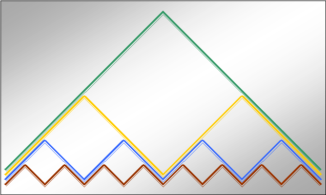

| Beethoven |
| The previous case exhibited fractal structure with respect to phrasing. Here we
investigate an example from the second movement of Beethoven's 7th Symphony, which
may exhibit fractal structure with respect to phrasing. Stay tuned for future developments. |
| This composition is, however, substantially more involved and correspondingly difficult to explain. Fortunately, its rich harmonies appear to facilitate
hearing different levels of scaling with respect to phrasing. |
| In this case we will begin on the level of one measure. |
| Because the symphony is written in 2/4, this corresponds to two beats of music. |
| As in the Bach example, the first four measures go from tonic to dominant, followed by dominant to tonic. |
|
| This progression sets up a pattern of what is often referred to as tension-release. |
| Moving from tonic to dominant gives rise to tension while moving back from dominant to tonic provides release. |
| Although the composition moves through many chordal changes, the sense of alternating movement we find in the
first four measures gives us an indication of how we can divide the composition into natural and complementary phrases. |
| This map represents the first 16 measures of the piece. |
| Each side of the red triangular trace corresponds to 1 measure;
blue sides are 2 measures; gold sides are 4 measures; and
each green side is 8 measures. |
| Follow the traces from left to right, the vertices of each trace correspond to a transition between tension and release points. |
|  |
|
| Sequenced by H.-J. Roeder |
| What is particularly interesting is how certain points in the composition can appear to provide tension or release depending on the
scale at which we place it into context. |
| (Thanks to Professor Michael Adelson, Cover Conductor for the New York Philharmonic
and Conductor of the Auros Group for New Music in Boston, for his discovery and presentation of this example.) |